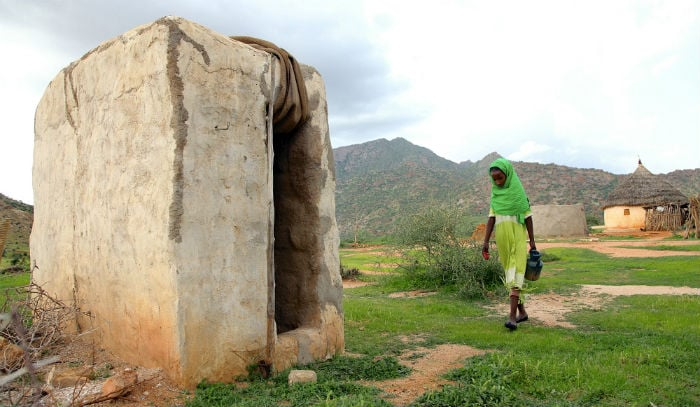

Kenya's Battle with Fecal Waste
The crisis is different depending on where you stand: the fight against disease is ultimately a fight against fecal waste.
The Crisis of Absence: Open Defecation Challenge
In rural villages, the crisis is one of absence. 11.5% of the population (over 4 million people) practice open defecation, directly contaminating the land and water sources they rely on, fueling a preventable cycle of disease.

The Fecal Waste Management Crisis: Shared Toilets & Sludge
In urban slums, official data claims open defecation is under 1%, but this hides the limited sanitation trap. Nearly 48% rely on shared, often overflowing latrines where waste is neither contained nor treated. This leads to untreated fecal sludge being dumped.
